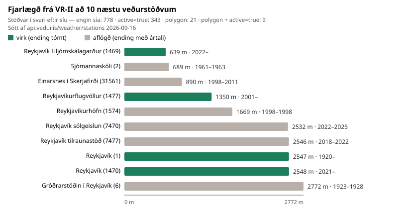

Veðurstofan (æfing 1B)
Þetta er æfing 1B úr hluta 1: vefþjónusta Veðurstofunnar. Verkefnið er einfalt í orðum: forrit á að sýna veðrið í VR-II (Hjarðarhaga 6) og þarf að velja eina veðurstöð til að lesa.
Spurningin er ekki bara hvaða stöð er næst húsinu, heldur hvaða stöð er nothæf. Það er ekki hægt að sjá á hnitunum einum — það stendur í lýsigögnunum.
Allur kóði er í src/vedurstofa_stodvar.py. Kóðabútarnir hér að neðan eru afrit úr þeirri skrá.
Gögnin: hvaðan þau koma og hvað þau lýsa
| Endapunktur | https://api.vedur.is/weather/stations |
| Skjölun | api.vedur.is/weather/openapi.json (OpenAPI) |
| Aðferð | GET, engin auðkenning og enginn lykill |
| Snið | JSON: fylki af hlutum með sömu lykla |
| Sótt | við hverja byggingu vefsins (sjá „Keyrsla“ neðst) |
Ein stöð í svarinu lítur svona út:
{
"station": 1,
"name": "Reykjavík",
"abbr": "rvk",
"type": "sk",
"lat": 64.1288833618,
"lon": -21.9081897736,
"ele": 60.2000007629,
"wigos": "0-20000-0-04030",
"owner": "Veðurstofa Íslands",
"start": 1920,
"ending": null
}Gögnin lýsa stöðvunum sjálfum, ekki veðrinu. Í svarinu eru engar mælingar — aðeins lýsigögn: hvar stöðin er, hver á hana, hvenær hún byrjaði að mæla og hvort hún mælir enn. Fjórir reitir bera greininguna:
| Reitur | Merking | Notkun hér |
|---|---|---|
station, name |
auðkenni og heiti | merking í töflu og á mynd |
lat, lon |
breidd og lengd | fjarlægð frá VR-II |
start |
ár sem mælingar hófust | hvort stöðin nái aftur í tímann |
ending |
ár sem mælingar hættu, null ef stöðin mælir enn |
mat á nothæfi |
Hnit VR-II (64,1386922, -21,9556406) voru flett upp í Nominatim hjá OpenStreetMap og eru fest sem fastar í skriftunni. python src/vedurstofa_stodvar.py --nominatim staðfestir að uppflettingin skili enn því sama.
Beiðnin: síurnar eru sendar með
Skriftan sendir fimm beiðnir á sama endapunkt: fjórar til að telja hvað hver sía skilar mörgum stöðvum, og eina í lokin sem sækir stöðina sem varð fyrir valinu.
svor = [saekja_stodvar(faeribreytur) for faeribreytur, _, _ in beidnir]Færibreyturnar eru settar í slóðina áður en beiðnin er send, svo þjónustan sér um síunina:
fyrirspurn = urllib.parse.urlencode(faeribreytur, doseq=True)
full_slod = f"{slod}?{fyrirspurn}" if fyrirspurn else slod
beidni = urllib.request.Request(full_slod, headers={"User-Agent": NOTANDI})
with urllib.request.urlopen(beidni, timeout=60) as svar:
return json.load(svar)Færibreyturnar þrjár sem eru notaðar:
active=true— aðeins stöðvar sem mæla enn.polygon=POLYGON((…))— aðeins stöðvar innan afmarkaðs svæðis.station_id=<auðkenni>— ein tiltekin stöð. Þetta er beiðnin sem forritið sjálft sendir þegar búið er að velja stöðina, og hún verður að skila nákvæmlega einni stöð; skriftan fellur ella með villu. Auðkennið sem var sent sést í neðstu línu Tafla 10.1.doseq=Truegerir kleift að senda mörg auðkenni í einni beiðni (station_id=1&station_id=2).
User-Agent auðkennir verkefnið, eins og vefþjónustur biðja um.
Beiðnirnar eru margar en ekki ein, því fjöldinn úr hverri er sjálfur niðurstaða: hann sýnir svart á hvítu að sían hafi tekið gildi.
https://api.vedur.is/weather/stations 2026-09-16.
| Færibreytur í beiðninni | Hvað beiðnin biður um | Stöðvar í svari |
|---|---|---|
| engin sía | allar stöðvar sem þjónustan þekkir | 778 |
active=true |
aðeins stöðvar sem mæla enn | 343 |
polygon |
aðeins stöðvar innan 5 km kassans um VR-II | 21 |
polygon + active=true |
hvort tveggja í sömu beiðni | 9 |
station_id=1469 |
stöðin sem forritið les, sótt beint | 1 |
Þjónustan hunsar færibreytur sem hún þekkir ekki og svarar samt með stöðukóða 200. Til dæmis skilar ?limit=3 öllum stöðvunum. Þess vegna er fjöldinn í hverju svari talinn og borinn saman í Tafla 10.1 í stað þess að treysta stöðukóðanum.
Hvernig kóðinn vinnur gögnin
Vinnslan er í fjórum skrefum.
1. Afmarka svæðið. Kassi með 5 km radíus utan um VR-II er skrifaður á WKT-sniði og sendur sem polygon:
d_breidd = radius_km / 111.0
d_lengd = radius_km / (111.0 * math.cos(math.radians(breidd)))Breiddargráða er um 111 km alls staðar, en lengdargráða styttist í \(111\cos\varphi\) — um 48 km á breiddargráðu Reykjavíkur. Kassinn spannar því fleiri lengdargráður en breiddargráður. Tvennt til viðbótar er auðvelt að klúðra: hnitaröðin í WKT er lengd breidd (öfug við lat,lon), og ferillinn þarf að lokast, svo hornin eru fimm en ekki fjögur.
2. Reikna fjarlægð. Haversine-formúlan gefur stórbaugsfjarlægð milli tveggja hnita:
a = math.sin(d_f / 2) ** 2 + math.cos(f1) * math.cos(f2) * math.sin(d_l / 2) ** 2
return 2 * JORD_RADIUS_KM * math.asin(math.sqrt(a))Gráðunum er breytt í radíana fyrst; það er algengasta villan í þessum reikningi.
3. Raða og meta. Stöðvarnar úr polygon-beiðninni fá fjarlægð, er raðað eftir henni og eru síðan metnar út frá ending (næsti kafli).
4. Skrifa niðurstöðuna. Skriftan skrifar töfluna, myndina og svörin hér á síðunni sem tilbúnar skrár. Engin tala á síðunni er slegin inn með höndunum; þær verða allar til í keyrslunni.
Mat á nothæfi: reiturinn ending
def er_virk(stod: dict) -> bool:
"""Stöð telst virk ef `ending` er tómt, þ.e. hún hefur ekki hætt mælingum."""
return stod.get("ending") is NoneEin lína ræður öllu matinu. Tómt ending þýðir að stöðin mælir enn; ártal þýðir að hún hætti það ár, hversu nálæg sem hún kann að vera. Ekkert í hnitunum eða nafninu segir þetta — aðeins lýsigögnin.
Sama skilyrði er hægt að senda með beiðninni sem active=true og láta þjóninn um síunina. Báðar leiðir eru notaðar hér: active=true til að telja, ending til að merkja hverja stöð á myndinni.
Niðurstaða

ending, gráar hafa hætt mælingum. Til hægri er fjarlægð og tímabilið start–ending.
Forritið á að lesa Reykjavík Hljómskálagarður (1469), 639 m frá VR-II: hún er næsta stöð við húsið og ending er tómt.
Myndin og taflan verða til upp á nýtt í hverri byggingu, svo þær sýna alltaf það sem þjónustan svaraði þann dag.
Svör við spurningum æfingarinnar
Hver er næsta veðurstöð við VR-II og er hún enn í notkun? Reykjavík Hljómskálagarður (1469), 639 m frá húsinu. ending er tómt, svo hún mælir enn og forritið má lesa hana.
Hver er næsta virka stöðin og hversu miklu munar? Reykjavík Hljómskálagarður (1469), 639 m frá VR-II. Næsta aflagða stöð er Sjómannaskóli (2) í 689 m, sem hætti mælingum 1963 — aðeins 50 m skilja stöðvarnar að. Röðun eftir fjarlægð einni saman getur því hæglega skilað ónothæfri stöð.
Hversu margar af stöðvunum eru virkar? 343 af 778, eða um 44 %. Listinn er því ekki listi yfir stöðvar í rekstri heldur allar stöðvar sem Veðurstofan þekkir, virkar og aflagðar.
Hvaða reitur segir hvort stöð dugi fyrir veðrið núna? ending. Tómt gildi þýðir að stöðin mælir enn; ártal þýðir að hún hætti það ár, hversu nálæg sem hún er. Sama skilyrði má senda með beiðninni sem active=true og láta þjóninn um síunina.
Dygði sama stöð til að bera saman við veður fyrir 50 árum? Nei. Reykjavík Hljómskálagarður (1469) hóf mælingar 2022 og á því ekkert frá 1976. Þá þarf að skoða start líka: næsta virka stöð sem nær svo langt aftur er Reykjavík (1) í 2547 m, sem mælir frá 1920. Nálægð og samfelld tímaröð eru tvö ólík skilyrði og sama stöðin uppfyllir sjaldnast bæði.
Fyrirvarar
- Kassi, ekki hringur.
polygonafmarkar ferning, svo horn hans ná ríflega 5 km frá VR-II. Það breytir fjöldanum lítillega en ekki röðuninni. - Kúla, ekki sporvala. Haversine reiknar á kúlu og skeikar innan við promilli á þessum vegalengdum.
- Tölur hreyfast. Stöðvum fjölgar og fækkar; talan sem stendur á síðunni í dag er talan úr þeirri byggingu, ekki fast gildi.
- Byggingin er háð þjónustunni. Svari
api.vedur.isekki fellur keyrslan með skýrum skilaboðum í stað þess að birta gamlar tölur þegjandi.
Keyrsla og skrár
python -X utf8 src/vedurstofa_stodvar.py # sækir gögnin og skrifar úttakið
python -X utf8 src/vedurstofa_stodvar.py --vista # vistar líka hráa svarið
python -X utf8 -m unittest tests.test_vedurstofa_stodvar| Skrá | Hlutverk |
|---|---|
src/vedurstofa_stodvar.py |
sækir gögnin, reiknar og skrifar úttakið |
tests/test_vedurstofa_stodvar.py |
netlaus próf á síum, fjarlægð og úttaki |
site/_generated/vedurstofa-*.md, -stodvar.svg |
tafla, svör og mynd — afleitt og í .gitignore |
Skriftan þarf að keyra á undan quarto render, því Quarto leysir {{< include >}} áður en pre-render skref keyra. GitHub Actions gerir þetta sjálfkrafa; staðbundið þarf að keyra hana sjálf(ur) fyrst. Aðeins staðalsafn Python er notað, svo requirements.txt er óbreytt.